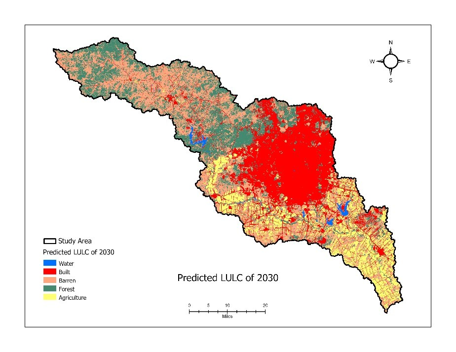
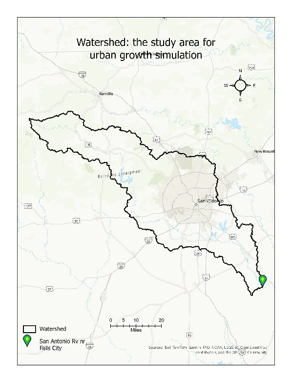
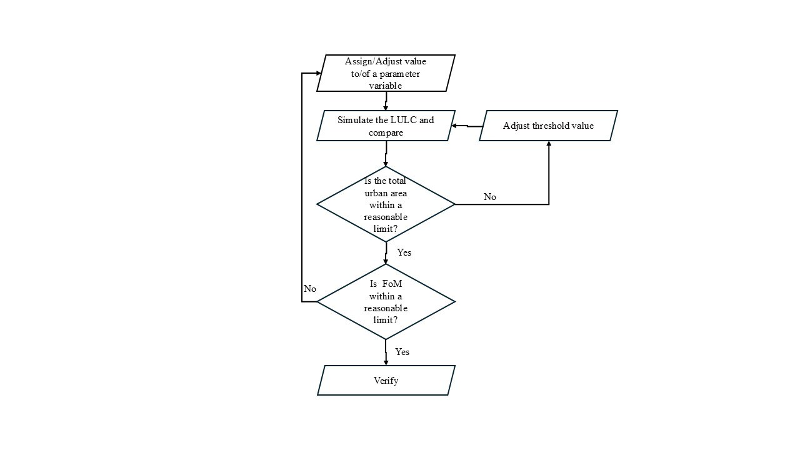
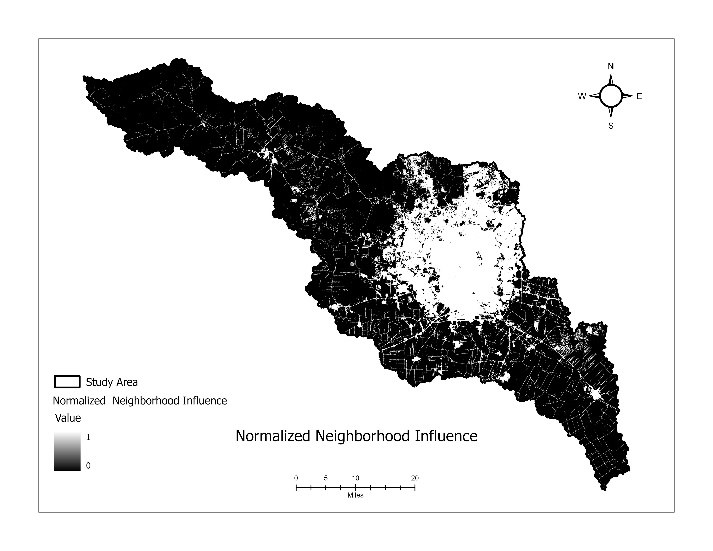
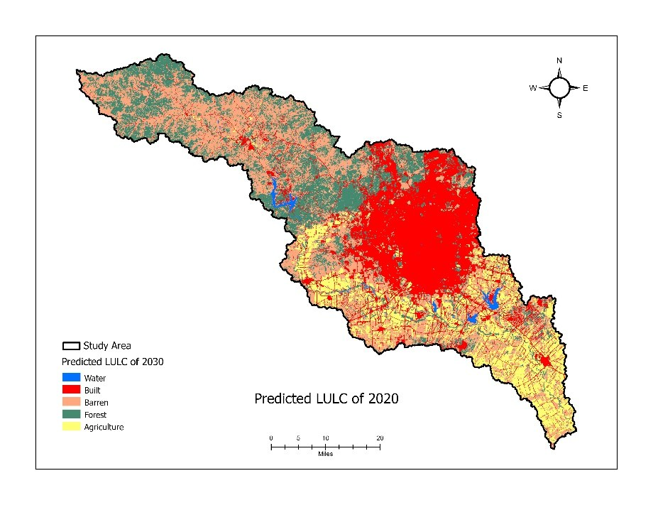
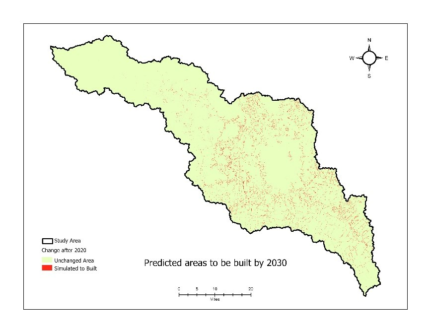
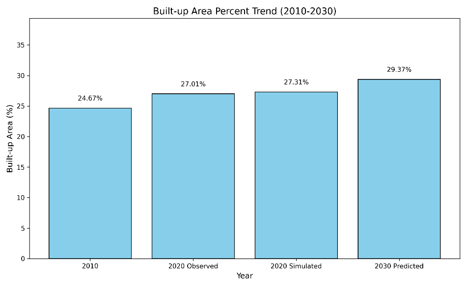

Urban growth reshapes watershed hydrology — more impervious surface means more runoff, more flood risk, and less groundwater recharge. Knowing where a city will expand lets planners act before the change happens.
This isn't a snapshot — it's a prediction, built from real transitions and validated against what actually happened.

- Delineate watershed from DEM (Fill → Flow Direction → Flow Accumulation → Snap → Watershed).
- Reclassify NLCD 2010 & 2020 into 5 classes.
- Compute the 2010→2020 Markov transition matrix in Python.
- Build CA spatial factors: distance to roads, highways, facilities, plus 3×3 neighborhood influence.
- Calibrate weights & threshold against observed 2020, then simulate 2030.

The Markov matrix quantifies how likely each land cover was to change between 2010 and 2020. Built land was highly stable (>99% stays built), while barren, agriculture, and forest fed the growth.
Neighborhood influence (β4 = 7) was the dominant driver — new growth clusters next to existing development.
| From \ To | Built | Barren | Forest | Agri |
|---|---|---|---|---|
| Built | 0.994 | 0.004 | 0.001 | 0.001 |
| Barren | 0.041 | 0.901 | 0.045 | 0.012 |
| Forest | 0.022 | 0.045 | 0.932 | 0.001 |
| Agriculture | 0.032 | 0.087 | 0.000 | 0.880 |

Validation compared the model's predicted 2020 against observed 2020 — a strong match confirmed the model before it was used to forecast 2030. The 2030 simulation shows continued growth near the city core and along highways.



The model is driven by two Python scripts, both on GitHub:
markov_transition_matrix.py— reads the 2010 and 2020 land-cover rasters and computes the Markov transition count and probability matrices with NumPy and rasterio.calibration_figure_of_merit.py— compares the simulated 2020 built-up map against observed 2020 to compute the Figure of Merit, false positives, and false negatives (arcpy + NumPy).
- Drivers limited to proximity and neighborhood (next: demographics, economics, policy, climate).
- Two-date Markov assumes stationary transitions; 30 m resolution; single watershed.
Read the code
Python scripts (Markov matrix + calibration), README, and all maps on GitHub.